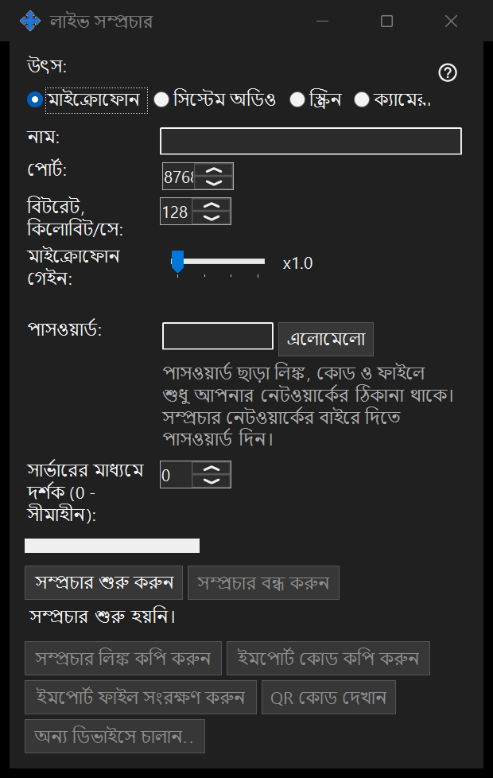

লাইভ সম্প্রচার
এটি কীসের জন্য
Share Manager থেকে স্ক্রিন, একটি উইন্ডো, ক্যামেরা, মাইক্রোফোন বা সিস্টেম অডিও ভাগ করুন। ৬৪-বিট ভিউয়ারে লিংক, কোড বা .fmsbcast ফাইল দিয়ে লাইভ সম্প্রচার খুলুন। শুরু করুন চাপলেই কেবল ক্যাপচার শুরু হয়।


এই ক্রমে
উৎস বেছে তারপর মনিটর বা একটি উইন্ডো, অথবা ক্যামেরা ও মোড নির্বাচন করুন। শুরু করার আগে শিরোনাম, দর্শকের পাসওয়ার্ড, অডিও ও LAN প্রবেশ যাচাই করুন। দর্শকেরা নির্বাচিত ছবি ও শব্দ পান, দৃশ্যমান ব্যক্তিগত তথ্যসহ। সম্প্রচার চলার সময় লিংক কপি করুন বা .fmsbcast সংরক্ষণ করুন। থামান সেশন শেষ করে; ক্যাপচার করা উইন্ডো বন্ধ হলেও সম্প্রচার শেষ হয়।
উপাদানসমূহ
লাইভ সম্প্রচার
উৎস বেছে তারপর মনিটর বা একটি উইন্ডো, অথবা ক্যামেরা ও মোড নির্বাচন করুন। শুরু করার আগে শিরোনাম, দর্শকের পাসওয়ার্ড, অডিও ও LAN প্রবেশ যাচাই করুন। দর্শকেরা নির্বাচিত ছবি ও শব্দ পান, দৃশ্যমান ব্যক্তিগত তথ্যসহ। সম্প্রচার চলার সময় লিংক কপি করুন বা .fmsbcast সংরক্ষণ করুন। থামান সেশন শেষ করে; ক্যাপচার করা উইন্ডো বন্ধ হলেও সম্প্রচার শেষ হয়।
ম্যানেজার সেটিংস · SFTP শেয়ারিং সেটিংস · এক্সচেঞ্জ সার্ভার সেটিংস